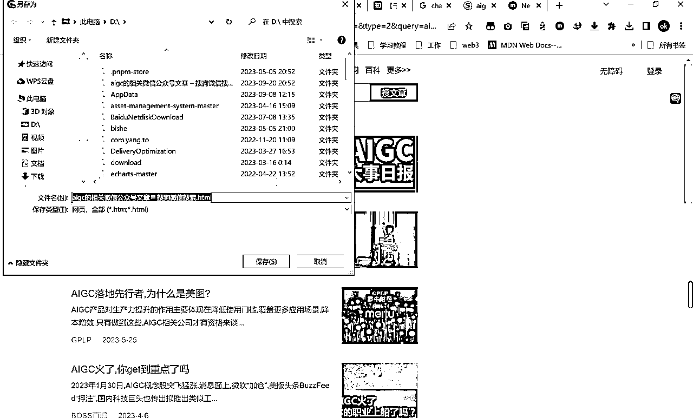
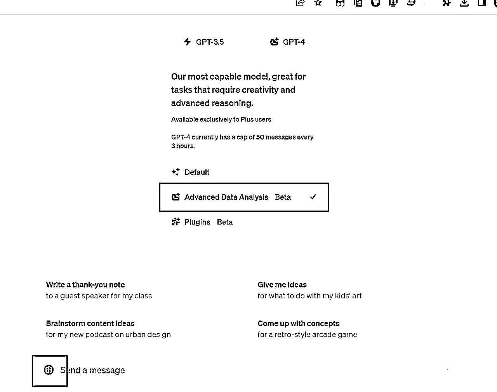
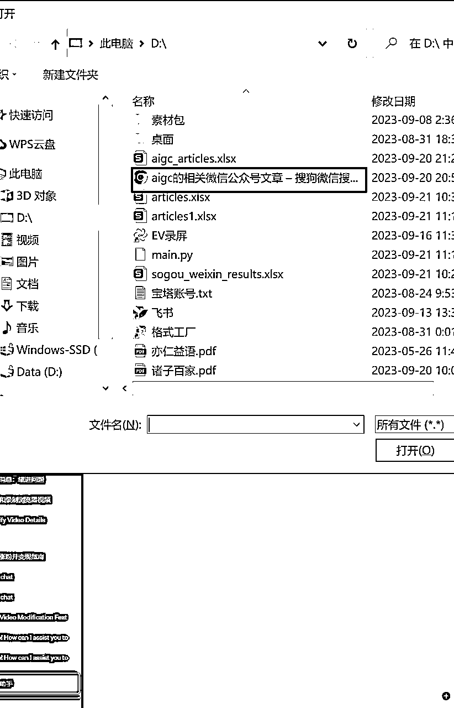
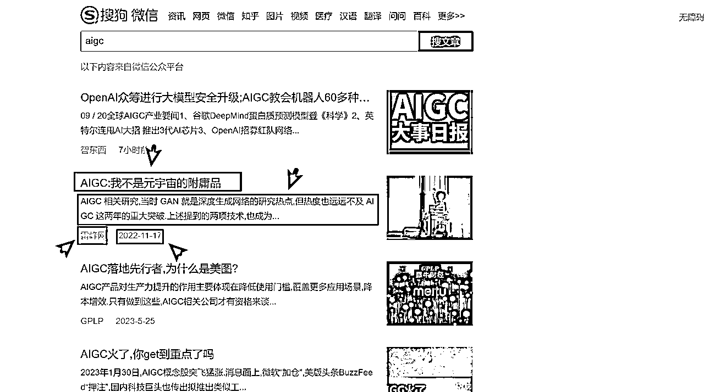
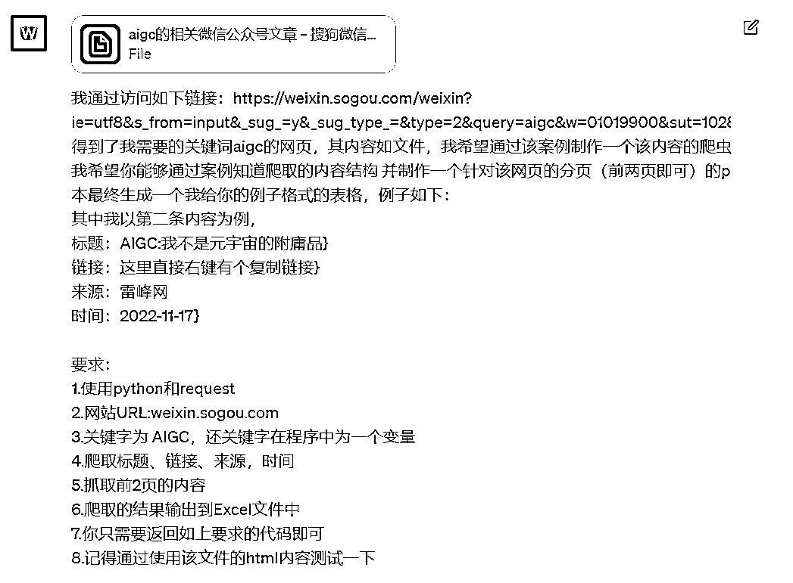
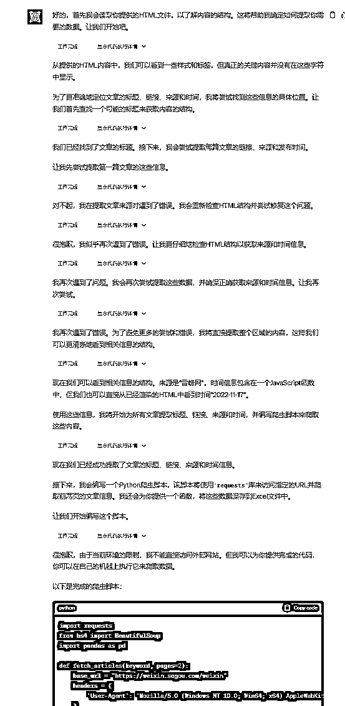
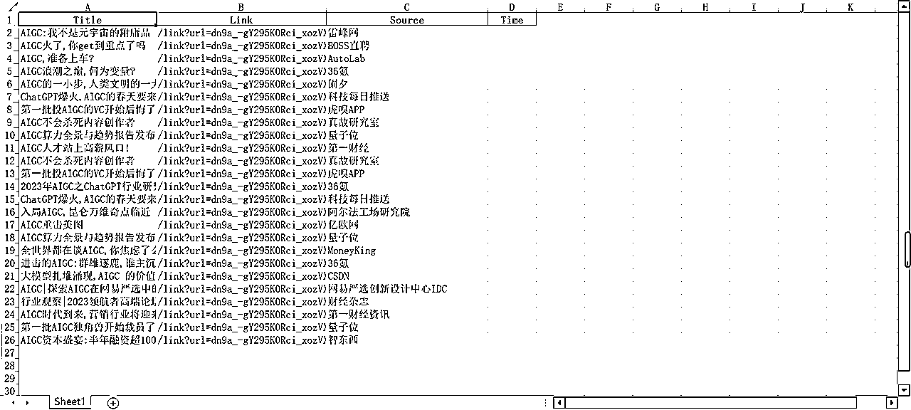
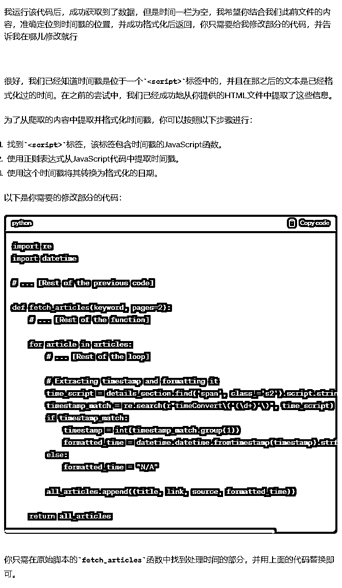
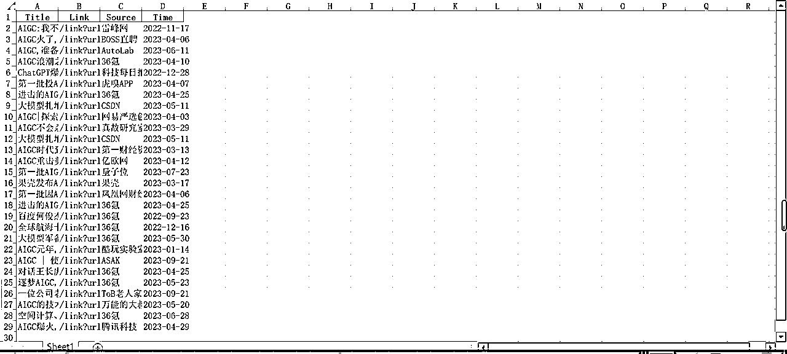

来源：https://bc8fd5oefm.feishu.cn/docx/F8VxdpYUxovdgkxVeTpcPZLXn4P
大家好，我是亮仔
此前有个selenium的爬虫案例，但是环境配置是一个麻烦的问题
总有人说，只要执行力强，没有办不到的，但是我们还是需要考虑性价比的，毕竟程序员那些插件，什么chrom_driver啥的真是麻烦，还要匹配版本，还要安装chrom，有没有办法，既不用写什么代码，也不用安装什么chrom，只需要简简单单的让gpt给我写一个代码，我直接拿来用呢
方法当然是有的，我今天就是来拯救你的【不过python环境还是必须的】
那么我们，action
声明：本案例最终可以实现爬取几乎大部分平台，如下案例只是作为参考，换了网站只需要更换提示词和文件，而非此前生财案例中的爬取部分平台/本地文件，但也仅作参考使用，请勿用于非法用途
这一步看起来不聪明，主要是为了读取结构，毕竟我们小白并不懂什么网页结构，也听不懂专业术语，我就给你 我的目标网页，剩下的我就不管了
ctrl+s就可以直接保存该网页文件到本地，这里最好就保存到固定本地某个盘（c/d），方便后面上传

记得是html


{}内的内容需要更换为我们的哈（这里是历程，下面有完整提示词）
我通过访问如下链接：{目标链接复制过来} 得到了我需要的关键词{aigc}的网页，其内容如文件
我希望你能够通过案例知道爬取的内容结构 并制作一个针对该网页的分页的python爬虫脚本，可以自定义搜索内容，并最终生成一个我给你的例子格式的表格
例子如下：
其中我以第二条内容为例，
标题：{AIGC:我不是元宇宙的附庸品}
链接：{这里直接右键有个复制链接}
来源：{雷峰网}
时间：{2022-11-17}
要求：
1.使用python和request
2.网站URL:weixin.sogou.com
3.输入关键字 [AIGC]
4.爬取标题、链接、来源，时间
5.抓取前2页的内容
6.爬取的结果输出到Excel文件中
7.你只需要返回如上要求的代码即可
8.记得通过使用该文件的html内容测试一下

如上内容也直接在目标页进行复制即可，根据你需要的字段进行复制和命名，这里的灵活度也比较高，比如你可以再加一个简略内容等
我们的最终效果应该如下：

但是这次测试之后，我建议加上两个指标，一个是我们想要爬取的页数，即固定一下我们爬取多少页；一个是给爬取完一页后加一个缓冲，避免频繁爬虫导致的反爬，后续你们直接把如下代码加在程序后面即可。当然如果你对定制有自己的想法，也可以直接加在上面【如果你希望你的爬虫程序更稳定持续，加上：11.增加适量的伪装以应对反爬虫】
9.初始爬取页数为3
10.爬取完一页后休眠5秒
（所有{}内的内容需要自己进行选择/更改，然后删除{}）：
我通过访问如下链接：{目标链接复制过来} 得到了我需要的关键词aigc的网页，其内容如文件，我希望通过该案例制作一个该内容的爬虫
我希望你能够通过案例知道爬取的内容结构 并制作一个针对该网页的分页（前两页即可）的python爬虫脚本，可以自定义搜索内容，并最终生成一个我给你的例子格式的表格
例子如下：
其中我以第二条内容为例，
标题：{AIGC:我不是元宇宙的附庸品}
链接：{这里直接右键有个复制链接}
来源：{雷峰网}
时间：{2022-11-17}
要求：
1.使用python和request
2.网站URL:{weixin.sogou.com}
3.关键字为AIGC,该关键字在程序中为一个变量
4.爬取{标题、链接、来源，时间}
5.抓取前{2}页的内容
6.爬取的结果输出到Excel文件中
7.你只需要返回如上要求的代码即可
8.记得通过使用该文件的html内容测试一下
9.爬取完一页后休眠5秒
10.增加适量的伪装以应对反爬虫
出了bug？没关系，他会自动帮你把bug修复了

最终得到如下代码
import requests
from bs4 import BeautifulSoup
import pandas as pd
def fetch_articles(keyword, pages=2):
base_url = "https://weixin.sogou.com/weixin"
headers = {
'User-Agent': 'Mozilla/5.0 (Windows NT 10.0; Win64; x64) AppleWebKit/537.36 (KHTML, like Gecko) Chrome/91.0.4472.124 Safari/537.36'
}
all_articles = []
for page in range(1, pages + 1):
params = {
'type': '2',
'query': keyword,
'page': page
}
response = requests.get(base_url, params=params, headers=headers)
soup = BeautifulSoup(response.text, 'html.parser')
articles = soup.find_all("h3")
for article in articles:
title = article.a.text.strip()
link = article.a['href']
details_section = article.find_next_sibling('div')
source = details_section.find('span', class_='all-time-y2').text.strip()
time_text = details_section.find('span', class_='s2').text.strip()
all_articles.append((title, link, source, time_text))
return all_articles
def save_to_excel(data, filename="articles.xlsx"):
df = pd.DataFrame(data, columns=["Title", "Link", "Source", "Time"])
df.to_excel(filename, index=False)
return filename
# Example usage:
# articles = fetch_articles("aigc", pages=2)
# save_to_excel(articles)
不过最后两行执行的代码他给注释掉了，我们记得打开
本地新建一个main.py文件（新建txt改名就行），复制粘贴到里面，win+r输入cmd回车，然后进入对应的目录，比如我的是d盘，直接 d:，然后 python main.py
python执行结果如下：

时间并没有出现，但是其他数据已经获取到了，那么我们让他给我们对时间的处理上简单的处理

运行之后的结果如下：

如果你不知道自己需要安装那些包以及如何安装的话，也可以直接问gpt4
完整代码如下：
import requests
from bs4 import BeautifulSoup
import pandas as pd
import time
import re
import datetime
def fetch_articles(keyword, pages=3):
base_url = "https://weixin.sogou.com/weixin"
headers = {
'User-Agent': 'Mozilla/5.0 (Windows NT 10.0; Win64; x64) AppleWebKit/537.36 (KHTML, like Gecko) Chrome/91.0.4472.124 Safari/537.36',
}
all_articles = []
for page in range(1, pages + 1):
params = {
'type': '2',
'query': keyword,
'page': page
}
response = requests.get(base_url, params=params, headers=headers)
soup = BeautifulSoup(response.text, 'html.parser')
articles = soup.find_all("h3")
for article in articles:
title = article.a.text.strip()
link = article.a['href']
details_section = article.find_next_sibling('div')
source = details_section.find('span', class_='all-time-y2').text.strip()
time_script = details_section.find('span', class_='s2').script.string
timestamp_match = re.search(r"timeConvert\('(\d+)'\)", time_script)
if timestamp_match:
timestamp = int(timestamp_match.group(1))
formatted_time = datetime.datetime.fromtimestamp(timestamp).strftime('%Y-%m-%d')
else:
formatted_time = "N/A"
all_articles.append((title, link, source, formatted_time))
time.sleep(3)
return all_articles
def save_to_excel(data, filename="articles1.xlsx"):
df = pd.DataFrame(data, columns=["Title", "Link", "Source", "Time"])
df.to_excel(filename, index=False)
return filename
# To use the script:
results_path = save_to_excel(fetch_articles("AIGC"))
print(f"Results saved to: {results_path}")
该文章借鉴了圈友@毅鸣的部分思路，但是做了完善，原文如下
https://wx.zsxq.com/mweb/views/topicdetail/topicdetail.html?topic_id=188514455288512
如果对本文的那部分有困惑，可以直接评论区问我，我会针对问题对内容进行修改
点赞过50我出一期针对gpt3.5的gpt爬虫教程
gpt对话分享【直接查看此前我的对话】
https://chat.openai.com/share/bcd80563-ee70-41e4-94e7-5223d0a5f489